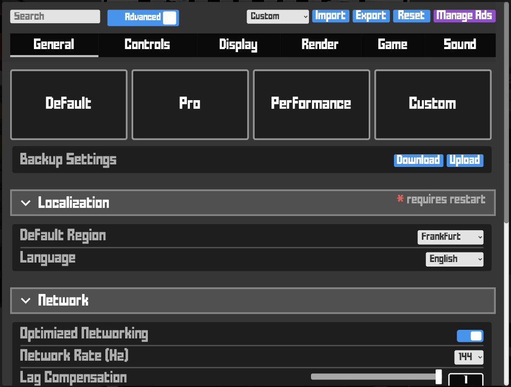

Krunker - Getting started
This guide covers the fundamentals for you to know the game mechanics about movement, controls, the HUD, and some advanced gameplay for you to start playing.
Controls
When using a keyboard and mouse, its buttons have the following commands (these settings can be adjusted in the Settings menu):
W, A, S, D - Movement: Use these keys to move forward (W), left (A), backward (S), and right (D).
Mouse – Move your mouse in any direction to have a look around and aim a weapon
Right Click – Aim Down Sight: This narrows the field of view for more precise targeting.
When using the Runner class or a melee weapon, the right click will bring up a bar in the middle of the screen which fills up, this is the damage/range meter.
Holding it will fill up the bar, and when is full, this will be the maximum damage and distance, the melee weapon can travel.
Left Click – Fire Weapon: It is also used to attack constantly while playing Runner and in Prop Hunt if you are on the prop team, allowing you to change props.
R – Reload: Press this button to reload a weapon
Space – Jump
Left Shift – Crouch: Tap this key to crouch, which will steady the aim and reduces the crosshair. Your jumps will be much shorter and lower.
Mouse wheel - Swap Weapons
Q - Switch to your melee weapon
E - Switch to your secondary weapon.
TAB - Scoreboard: See the current scoreboard on the match
Windows - Player list
ALT - Playerlist: opens up the player list of the lobby and allows actions on players, like calling the KPD, votekick and if you are a host, ban and kick players.
F - Spray: If you have Premium, holding F and scrolling lets you select your desired spray.
X - Inspect: Pressing X starts an animation to inspect your weapon skins.
G - Pick up weapons (maps with pickup areas)
If you already have a weapon, your current weapon will be swapped with the weapon you are picking up
Z - Drop the weapon you picked up.
Enter - Chat (unless you turned it off in the Game Settings).
V - Enables voice chat
F - Enables spectate mode
Numerics - In prop mode, as part of the prop team, allows you to taunt or tease the prop hunters team
Movement
Strafing: W+A or W+D at the same time, for 1.2x faster movement. Your movement can also be controlled with your mouse, by pointing your crosshair in the direction you want to look in (e.g. looking to your right while pressing W to walk forward.)
Note that you cannot strafe in two opposite directions (WS or AD).
Bunny hop: Press W+Space repeatedly: Consecutive jumping builds you up a lot of momentum, and it’s a core movement mechanic used in normal gameplay because it makes you harder to hit. It can also be used in Parkour maps because it allows you to jump farther. Classes like the Runner, Agent and Run N Gun also allow you to wall jump by jumping into a wall.
Slide: Press Shift after jumping
Slide hop: While moving forward, jump, then while in the air hit Crouch (Shift) and release Shift, and then repeat to gain a speed boost. To control the direction of the movement, move your mouse in the middle of the slide.
Curve sliding: Perform a Strafing + Slide hop and change direction before landing or move the mouse as landing
Full hop: Jumping while holding Shift on the slide
Short hop: Use aim down sight to slow the jump and jump lower
Stutter/Side step: Flipping aim to the opposite direction of jumping, bringing the cursor back to the center while sidestepping
Moon jump: Instead of jumping right after releasing Shift, allow the stand-up animation to complete
Tips
- Jumping and movement techniques should be trained in the technical maps (race, run and parkour)
- Optimize your turns, make tight turns at a 90º angle, it helps to move your mouse right before you land and you move faster
- Don’t forget, the less time you spend on the ground more momentum you keep from your jumps, to keep moving faster.
HUD
Initial screen

On the left side, it’s the main menu, where you can see: Profile, Shop, Missions, Hub, Custom Games, Mods list, Settings, Streamers, Updates

On the top left, you can see: KR and Junk balance, Store and Junkyard, Notifications inbox.

On the centre-right, you can access: Character, classes, and load-outs, Krunker Police Department tab

On the top right you can find: Featured content, Server, Social media platforms, Client download, Krunker editor

At the bottom right, you see: Map, Business inquiries, Contacts, Terms of Service, Changelog

In-game

On the top left you have: Timer, Ping, Mode, Map

On the bottom left: Chat, Health, Voice chat

On the top right: Match log

On the bottom right: Loadout and ammunition

At the center: Crosshair or weapon’s sights
Settings
In the Settings menu will be able to configure almost every aspect of the game to your liking. The tabs and options that appear depend on what type of view you select, you have basic which covers some of the basic options and advanced for a more extensive configuration.
Some of the options that can be customized are mouse sensitivity and acceleration for perfect precision in your aiming, interface settings such as UI information, chat configuration, crosshair, and telemetry.
The Render tab is where you’re going to find the main settings that will impact how the game is displayed and how objects on the screen are rendered, these are the set of settings that will let you balance visuals with frame rate and will have a different impact on performance. It allows you to tinker with details, textures, shadow and lighting, post-processing effects, and others.
Lastly, you can adjust volume levels and mix on the Sound tab.
